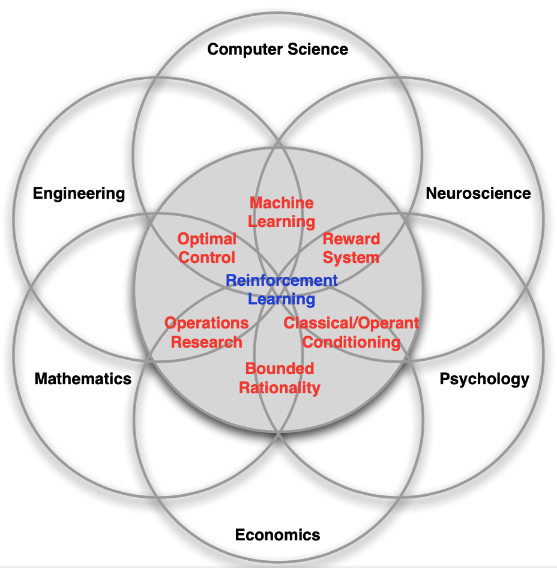
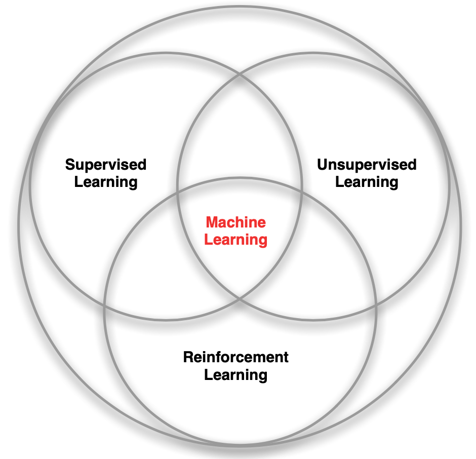

[强化学习]1·概述
1 关于强化学习
强化学习是一种优化智能体在环境中行为的方法，根据环境反馈的奖励，调整智能体的行为策略，提升智能体实现目标的能力。
强化学习与多学科交叉：强化学习与计算机科学、工程学、数学、神经学、心理学、生态学等众多领域都有联系，涉及最优控制、机器学习、运筹学、线性代数、概率统计、随机过程、计算机编程等学科。


强化学习与其他机器学习方法：一般而言，我们把机器学习分成有监督学习、无监督学习和强化学习三大类，强化学习与另外二者有很大的区别。
强化学习：
- 产生的结果（动作）能够改变数据的分布（状态）
- 最终的目标可能要很长时间才能观察到 / 奖励稀疏（例如下棋）
- 没有明确的标签数据
- 根据当前的奖励，最终实现长远的目标
监督学习 / 无监督学习：
- 产生的结果（输出）不会改变数据的分布
- 结果是瞬时的 / 输出误差
- 要么有明确的标签数据（监督学习）
- 要么完全没有任何标签数据（无监督学习）
强化学习有很多应用，例如：控制直升机的特技飞行、下棋、管理投资、控制类人机器人行走、玩游戏……
2 课程概要
Lecture 2. 马尔可夫决策过程
Lecture 3. 动态规划，策略迭代，价值迭代
Lecture 4. 蒙特卡洛，时间差分
Lecture 5. Sarsa，Q-learning
Lecture 6. 函数逼近
Lecture 7. 策略梯度
Lecture 8. 博弈强化学习
Lecture 9. 逆强化学习
Lecture 10. 离线强化学习
Lecture 11. DQN，AlphaGO
Lecture 12. 深度强化学习，自动驾驶
3 强化学习基本元素
状态 (state)：描述当前智能体位置、姿态等信息的变量
状态空间 (state space)：智能体所有可能状态的集合 \(\cal S\)，可以是离散状态集或连续状态空间
动作 (action)：智能体能够执行，改变当前状态的变量
动作空间 (action space)：智能体所有可行的动作集合 \(\cal A\)，可以是离散动作集或连续动作空间
策略 (policy)：状态空间到动作空间的映射 \(\pi:\cal S\to\cal A\)，代表了智能体是如何行为的
- 确定性 (deterministic) 策略：\(a_t=\pi(s_t)\)
- 随机 (stochastic) 策略：\(a_t\sim\pi(a_t\vert s_t)=P(A_t=a_t\vert S_t=s_t)\)
状态转移 (state transition) / 环境 (environment) / 模型 (model)：描述智能体在给定动作下状态的变化
- 离散时间 \((s_t,a_t)\to s_{t+1}\)，包括确定性转移 \(s_{t+1}=f(s_t,a_t)\) 和随机转移 \(s_{t+1}\sim P(s_t,a_t)\)
- 连续时间 \(\dot s_t=f(s_t,a_t)\)
奖励 (reward)：环境对智能体当前的状态 / 动作好坏程度的反馈，是一个标量随机变量 \(R_{t+1}\)
回报 (return)：智能体从某一初始状态出发，在策略下产生的轨迹上的累加奖励 \[ G_t=R_{t+1}+\gamma R_{t+2}+\cdots=\sum_{k=0}^\infty\gamma^kR_{t+k+1} \] 其中 \(\gamma\in[0,1]\) 为折扣因子 (discount factor).
价值函数 (value function)：评价一个状态或动作的好坏，定义为智能体在当前状态下回报的期望 \[ v(s)=\mathbb E[G_t\vert S_t=s]=\mathbb E[R_{t+1}+\gamma R_{t+2}+\cdots\vert S_t=s] \] 奖励假设 (reward hypothesis)：智能体的任务就是要最大化期望累加奖励（价值函数）
最优价值 (optimal value)：智能体在每个状态下能获得的最高价值
最优策略 (optimal policy)：能够使智能体获得最高价值的策略 \(\pi^\ast\)
4 强化学习基本问题
Learning and Planning
在 learning 问题中，智能体不知道环境的运行机制、不知道游戏的规则，仅能通过与环境交互来改善策略；在 planning 问题中，智能体有一个环境的模型，无需与环境交互就可以依靠模型进行运算来改善策略。
二者是紧密相连的，面对一个 learning 问题，智能体可以首先通过交互构建模型，学习环境的运行机制，然后用模型进行规划。
Exploration and Exploitation
Exploration 和 exploitation 是一种 trade-off 的关系。前者意味着试错，可能导致更差的奖励，但也可能发现更好的策略；后者意味着用已知的信息找寻最好的策略，而不是尝试新事物。
Prediction and control
Prediction 指给定一个策略后，计算未来的奖励，可以理解为求解给定策略下的价值函数；Control 指找到最佳策略以最大化未来的奖励。
5 课程参考资料
- 赵冬斌, 朱圆恒, 中国科学院大学《强化学习》课程
- David Silver, University College London Course on Reinforcement Learning, link
- Emma Brunskill, Stanford CS234 Reinforcement Learning
- Sergey Levine, UC Berkeley CS 294 Deep Reinforcement Learning
- CMU 10703: Deep RL and Control